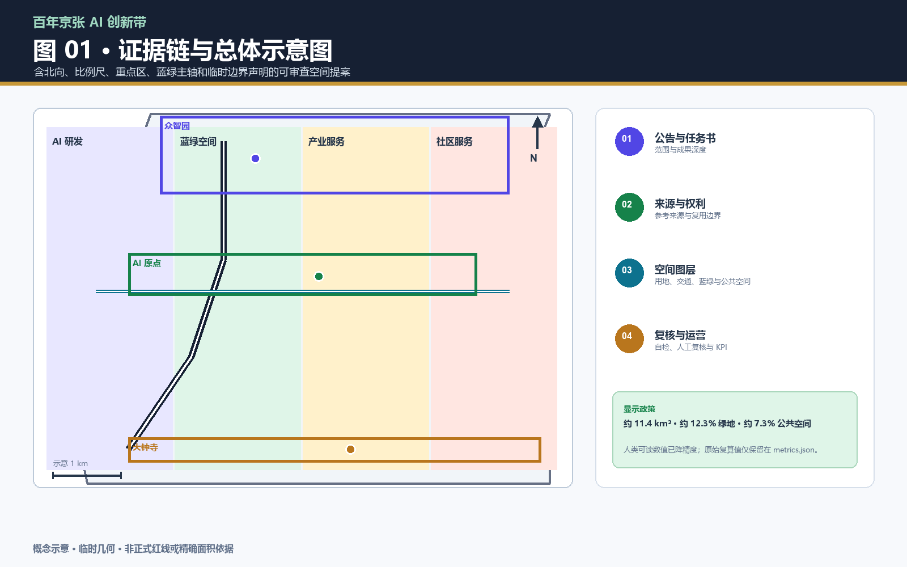
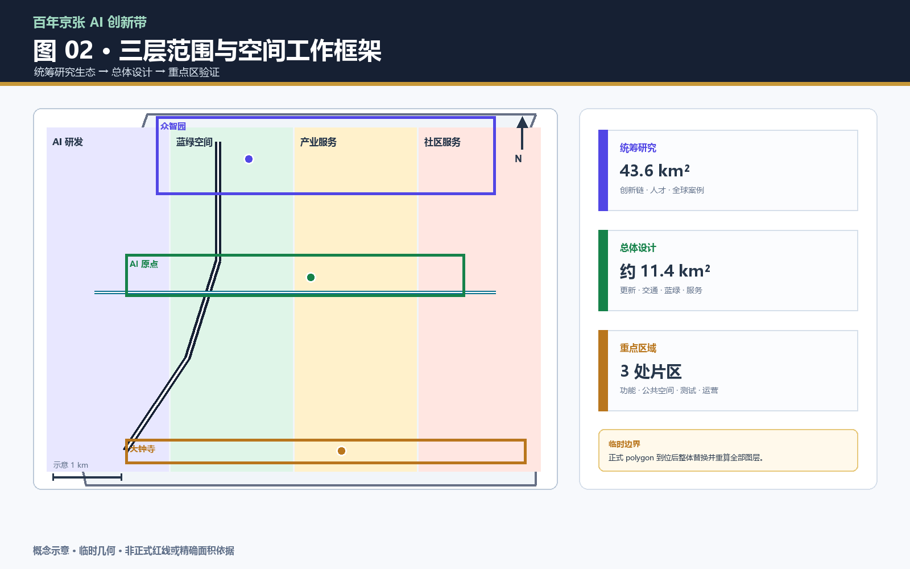
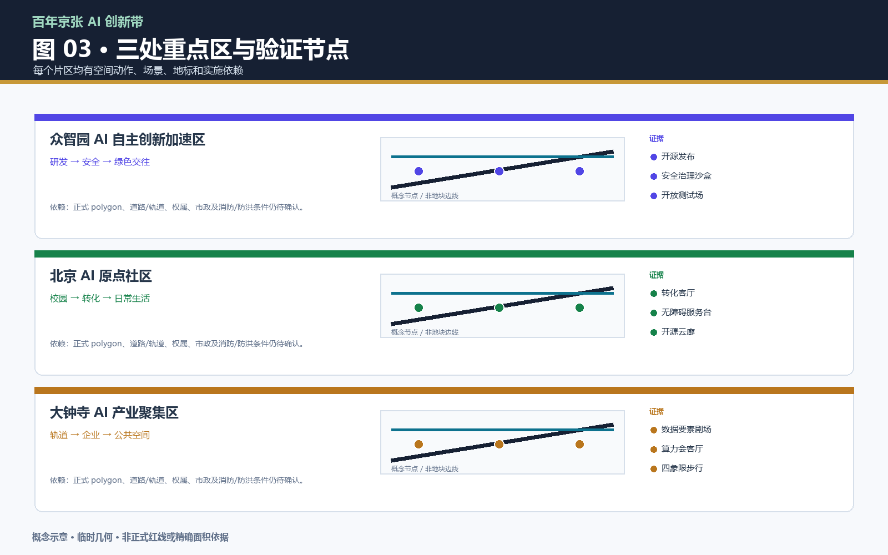
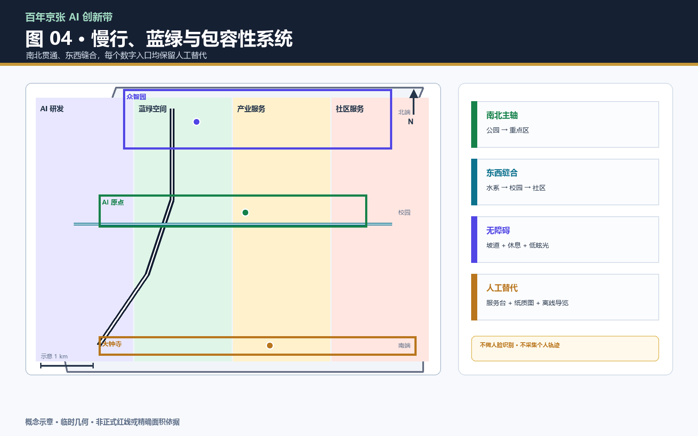
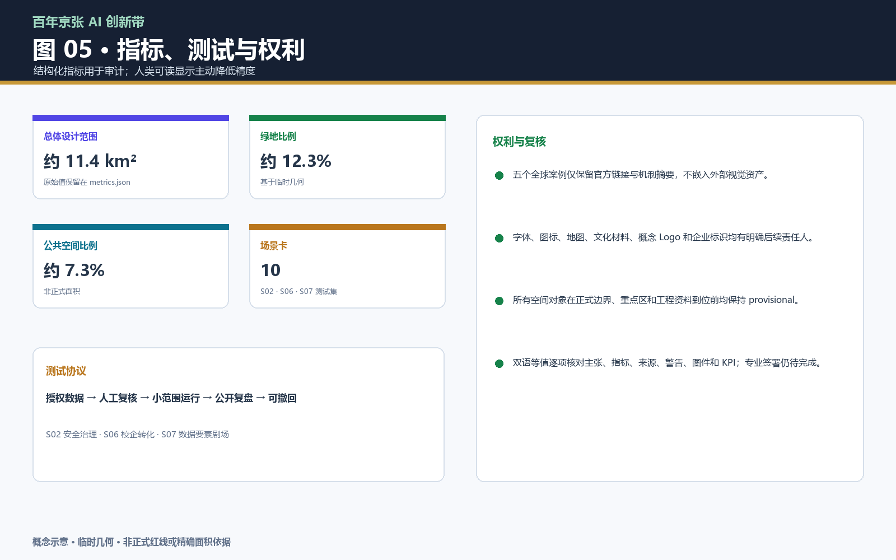

信息索引
总览地图三层范围重点区域用地分区交通慢行蓝绿公共空间建筑与更新项目AI 场景核心指标任务覆盖自检状态假设
品牌、功能与区域协同
两条轨道加一枚向前脉冲节点；五大功能形成从研发到国际传播的闭环。
| 定位 | 功能 | 空间/服务落点 |
|---|---|---|
| 百年京张文化带 | 记忆 + 传播 | 时间线、导视、贡献墙 |
| 都市 AI 生活体验带 | 生活 + 体验 | 慢行环、社区服务、人工替代 |
| AI 融合创新带 | 研发 + 转化 | 发布、测试、算力、路演 |
区域协同接口
北纬社区 · 未来科学城 · 怀柔科学城 · 经开区 · 京津冀
所有合作对象在书面确认前均为概念建议。
参考案例：新加坡 Punggol Digital District · Helsinki 3D · Seoul S-Map · Amsterdam Algorithm Register · Virtual Singapore
修订后的视觉证据
五张图按修订后的信息架构重新绘制，加入北向、示意比例尺、图例、低精度数值和就近临时边界警告。





十张场景卡与三项产业测试
十张场景卡逐项记录数据、隐私、人工复核、运营、成熟度、异常处置和 KPI；S02、S06、S07 组成拟议产业测试集。
site_area_sqm约 11.4 km²基于临时几何
green_ratio约 12.3%人类显示降精度
public_space_ratio约 7.3%非正式面积
key_area_count3临时重点区
| 场景 | 位置 / 对象 | 数据、隐私、复核 | 运营 / 成熟度 / KPI |
|---|---|---|---|
| S01 开源发布厅 | 原点社区 / 开发者、高校、初创 | 公开议程；主动提交；不采集轨迹；人工审核 | 社区运营+高校联络 / 试点 / 季度4场、满意度≥80% |
| S02 安全治理沙盒 | 众智园 / 评测团队、公众 | 授权测试集；结果脱敏；专家复核 | 安全协作组 / 试点 / 每季3个测试包 |
| S03 AI慢行诊断 | 公园跨路节点 / 居民、无障碍使用者 | 公开路网、匿名计数、人工步行；不做人脸 | 公共空间运营 / 可验证 / 断点闭环≥70% |
| S04 人才生活管家 | 社区园区 / 人才、照护者、老年人 | 主动查询；人工柜台和纸质导览 | 社区服务站 / 概念验证 / 替代通道100% |
| S05 AI安全治理廊 | 众智园 / 企业、学生、公众 | 授权模型卡和风险案例；人工讲解 | 标准安全组 / 概念 / 每月公开讲解 |
| S06 校企转化客厅 | 原点社区 / 高校、企业、法务 | 自愿预约；成果权利由提交方确认 | 转化运营方 / 试点 / 每季6次对接 |
| S07 数据要素剧场 | 大钟寺 / 企业、公众、开发者 | 脱敏、授权、可追溯样例；人工审计 | 数据治理组 / 概念验证 / 每样例有来源链 |
| S08 低碳算力驿站 | 蓝绿节点 / 居民、开发者 | 只读能耗；不采集身份；人工运维 | 设施+能源方 / 工程待核 / 响应≤24h |
| S09 京张记忆线路 | 遗址公园至片区 / 访客、学生 | 清权文字音频；离线导览 | 文化/公共空间 / 试点 / 完成率≥60% |
| S10 全球AI活动周 | 一带公共空间 / 开发者、社区、访客 | 自愿报名、最小化；安全与肖像逐项核验 | 活动协调方待确认 / 长期概念 / 年度复盘 |
公共空间、地标与运营
一条历史主线、两条连接方向和三个概念地标。六项项目使用概念 RACI/KPI，不把机构写成已确认责任主体。
| 地标 | 空间动作 |
|---|---|
| 脉门 | 遗址入口；时间线、人工导览、无障碍休息 |
| 开源云廊 | 原点社区；可拆卸发布与路演界面 |
| 算力会客厅 | 大钟寺；能源/算力解释与公共座椅 |
公共空间组件库: 无障碍坡道 · 休息边界 · 可替换导视 · 纸质地图 · 低眩光照明 · 可预约测试台 · 数据说明牌 · 人工服务台
包容性、版权与待确认条件
包内不嵌入远程脚本、远程字体、地图瓦片、第三方图片或企业标识。台账是来源证据，不是法律清权证明。
待确认条件
正式边界/重点区 polygon、道路、权属、控规、市政、无障碍调查、合作授权和专业翻译签署仍待确认。
人工等值核对
已核对标题、主张、指标、来源、边界警告、图号/图位、场景 KPI 和版权说明；专业人工签署仍是必要步骤。
可审查记录见 report/copyright_statement.md、sources.json、risk.json、spatial.json 和 compliance_matrix.json。